Why is it hard to learn other languages?
Lin 211 • Section 3, Part 4
Kevin B McGowan
![]()
2026-10-21
Read today: Bilingual Brain
Does being a native speaker make someone a better language teacher?
Ling Link
- Last time I asked you what adult language learners might find difficult about learning English
- On the next slide there is a word cloud of (mostly) adjectives
- please use at least 3 of these adjectives to describe an imaginary house
- describe at least two (2) different imaginary houses
- then discuss your description with your neighbor(s)
“House”

::: {.notes}
Quantity How many?
Opinion What is the general opinion?
Size How big or small?
Age How old?
Shape What shape?
Color What color?
Origin Where is it from?
Material What is it made of?
Purpose What is it used for?
but it’s really semantic and cultural; how central to this object does our culture believe this property to be
:::
Things that are hard about English for Second Language Acquirers
- /θ/ and /ð/: The two different sounds we spell with
th are very rare in the world’s languages and difficult to acquire
- Listen to French accented-English, Chinese-accented English, German-accented English, Irish-accented English, etc.
Things (3)
The Definitie and Indefinite Articles:
- ‘the’ means something like “the world contains one of these things that is relevant to what I am saying” (e.g. the bicyle, the football team, the cookie)
- ‘a’ and ‘an’ mean something like “I am talking about a thing that exists in the world, but it isn’t relevant which one I mean” (e.g. a bicycle, a football team, a cookie)
Past Perfect vs. Present Perfect: “I ate a cookie” vs “I have eaten a cookie”
Language-specific sound pairs: /ɹ/ and /l/ for Japanese; /b/ and /v/ for Spanish speakers; /w/ and /v/ for Russian speakers, etc.
Bilingualism
We need to distinguish between two kinds of bilingualism.
- Simultaneous Bilingualism: occurs when a child grows up in a society where using more than one language is the norm.
- Sequential Bilingualism: occurs when an older child, teen, or adult acquires a second language
Recall
- Language acquisition is the process by which humans acquire the ability to use, produce, and perceive language!
- First Language Acquisition: how an infant acquires his/her first or native language
- Second Language Acquisition: how children and adults acquire additional languages beyond the first
- How is FLA different than SLA?
- Multilingualism = global norm!
First vs Second Language Acquisition
- First-language acquisition involves an initial linguistic experience, while a second language is mastered only by someone who already speaks another language
- A first language is usually acquired in a context-rich, home environment
- Because of age and social identity, the adaptability and flexibility of learners decreases for 2nd language learners
Acquiring a second language
- Remember, a second language is any language that is acquired after one’s first language
- It may well be a third or fourth “second” language
- Many differences – environmental, metalinguistic, etc.
- What are some of the issues associated with learning a second language later in life?
- Helps in understanding why not everyone learns to speak “proper” English
- And why you might have felt like you struggled with learning a language!

A Second Language Acquiring Brain…
- If you read the short reading for today, you saw:
- Learning a new language = a cognitive workout!
- Our brains are flexible!
- They talked about multiple languages being at different “volumes”
- How “loud” a language is = connected to age, how often you use it, how proficient you are
- It’s harder to lower the volume on some languages (e.g., the ones you use most)
- The switching costs depend on how similar the languages are
- All of this contributes to how well we acquire additional languages
Interlanguage
- Some researchers view second-language learners as developing a series of interlanguages in their progression towards mastery of the target language
- An interlanguage is the set of forms of the target language that a learner has internalized, some of which may be native-like while many may not, but may still develop toward the native norm
Fossilization
- A big problem in learning a second language is fossilization
- The process by which second language learners develop a linguistic system that is different from both the learner’s first language and the target language
- Looks like a plateau or loss of progress
- In most adults, the language-learning process typically slows down or ceases at some point, for various reasons such as age, motivation, communicative needs, and social flexibility
Critical Period
- It’s possible fossilization is connected to this idea of a critical period
- The hypothesis is that, as we age, learning a second language becomes more difficult
- It is more ideal to acquire language in childhood, in those context-rich environments
- This ideal time is usually thought to be before and around the start of puberty, but it differs from person to person
- The evidence in favor of a critical period has been centered on the study of second language accents
- In addition to the things we’ve already said about language (e.g., rule-governed, systematic, communicative, arbitrary), we can also say that:
- All languages are equally challenging
- …or equally easy
- Every child who is capable of acquiring language will acquire a language
- There is no biological basis that predisposes children to learn any PARTICULAR language
- This is usually determined by the language(s)/culture(s) children grow up in
- However, acquiring certain features of certain languages may require more time to acquire
- Ex. German vs. English definite articles
Why some languages seem harder than others
- Plenty of people will say Latin/Arabic/Chinese “is soooooo hard”
- What they really mean = “It is soooooo hard for me compared to my native language”
- No such thing as “primitive” languages; all languages have linguistic complexity
- Simplicity in one area > relative complexity in another
The role of motivation
- Many of you are here because you decided that you don’t like learning languages, or you feel like you aren’t “good” at them
- Perhaps you also lack the motivation to learn one
- “When would I ever use French in real life?”
- “English is spoken everywhere now!”
- What types of motivations can we find?
- Instrumental motivation: one in which knowledge of the target language will help achieve some other goal
- Singing opera, conducting business, etc.
- Integrative motivation: need to learn to fully integrate into a community that uses the language